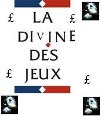
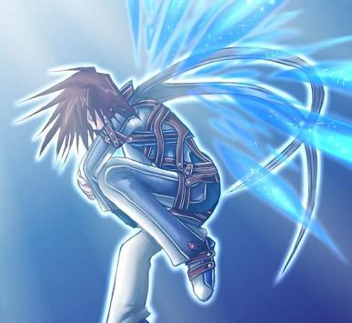

Forums galactiques > Taverne galactique : lieu de discussion informel > Lotterie Galactique : Tirage n°1
| Divine des jeux  09/12 ETU 18:50 | Commandants, Commandantes! Une première lotterie est organisée! La cagnotte initiale est de 500 000 leems, grâce à un don divin. La cagnotte finale sera calculée a l'issue des mises. Vous avez jusqu'a samedi 17 décembre à 20 heures pour miser. En cas de problème pour le paiement, n'hésitez pas à me le signaler, je me chargerais d'assurer le transport de la somme due. Voici les règles pour les premiers tirages : - Chaque commandant peut miser autant de numéros qu'il le souhaite. - Les numéros choisis se situent entre 0 et 100 compris. - La mise est de 10.000 leems pour le premier numéro joué, 5 fois plus élevée pour le deuxieme numéro joué, donc chaque numéro en plus coute 5 fois la mise du numéro précédent.(ex : un commandant joue 3 numéros : il me doit donc 10 000 + 50 000 + 250 000 = 310 000 leems) - Plusieurs joueurs ont le droit de prendre un même numéro. Dans ce cas les gains seront partagés. - Il y aura 4 numéros de tirés le samedi par Dieu. - Les mises s'arêteront le samedi soir à 20 heures. Bonne chance! Ce topic ne sert qu'a inscrire les numéros que vous choisissez, pour toute autre question, contactez moi par mp. |
Zamann 09/12 ETU 18:52 | LE problème c'est si on a pas confiance.... on te file un max de fric et hop ! tu te casse... ça serait trop con vraiment... |
Divine des jeux09/12 ETU 19:05 | Quelques précisions s'imposent: La Divine des Jeux n'est pas un commandant comme les autres : elle n'a pas de planète, son activité est uniquement l'organisation des Lotteries Divines. Ses comptes sont surveillés par Dieu. Il n'y a aucun risque de détournement des fonds de la Divine des Jeux. Pour plus d'infos, je vous conseille d'aller voir le sujet Présentation de la Divine des Jeux, ici-même, à la taverne. Que la chance soit avec vous! |
| Kratos Aurion  09/12 ETU 19:16 | je joue le 25 Possibiliter que vous vous occupiez des transports de fond ? |
Spectror 09/12 ETU 19:17 | Absolument, c'est le deuxième rôle de la DDJ après l'organisation de la loterie. 38. |
Grosalen09/12 ETU 19:20 | Je joue le 36 et demande l'aide au paiement ! |
Damned Wolf09/12 ETU 19:25  | Je joue le 13 :) |
Obéron 09/12 ETU 19:39 | le 9 pour moi |
Janclodius09/12 ETU 20:11 | 02 envoyez l'offre svp |
djrems09/12 ETU 20:42 | 82 |
Salyin 09/12 ETU 21:15 | le 7 |
Mushu10/12 ETU 13:22 | Je prends le 49. |
Mushu10/12 ETU 13:23 | Pouvez vous m'envoyer l'offe de paiement? Merci |
Divine des jeux10/12 ETU 13:37 | La cagnotte actuelle est de 545 000 leems. Elle continuera à grosir au fur et à mesure des inscriptions. |
Sidoor ll10/12 ETU 15:57 | Je joue le 14. Pouvoyez-vous m'envoyer la facture ? |
Bob Brache10/12 ETU 16:15 | Damned, ye souis trop fauché pour jouer cette semaine. Hé hé... |
Uplor10/12 ETU 18:42 | le 37 et le 49 , envoyez la facture ;). |
Dante10/12 ETU 19:25 | je joue le 9. |
Bob Brache10/12 ETU 19:54 | Oh, ye croyais qué la mise initiale était dé 50.000£ En ce cas... Ye joue lé 73 ! Ye vous prie dé m'envoyer la facture s'il vous plaît. |
Kayain11/12 ETU 17:27 | 27 , pareil un peu de réduction pour un nouveau commandant d'un seul jours. |
Forums galactiques > Taverne galactique : lieu de discussion informel > Lotterie Galactique : Tirage n°1